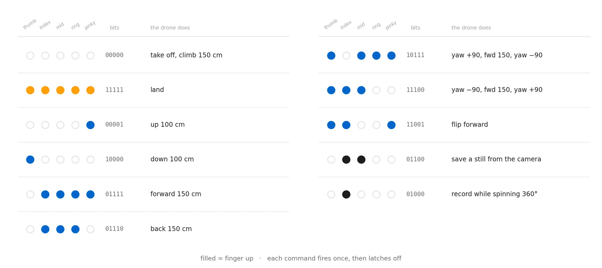
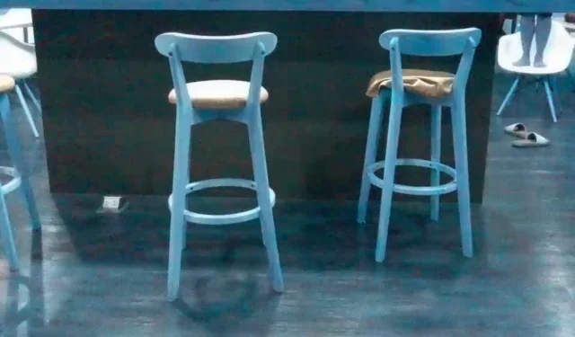
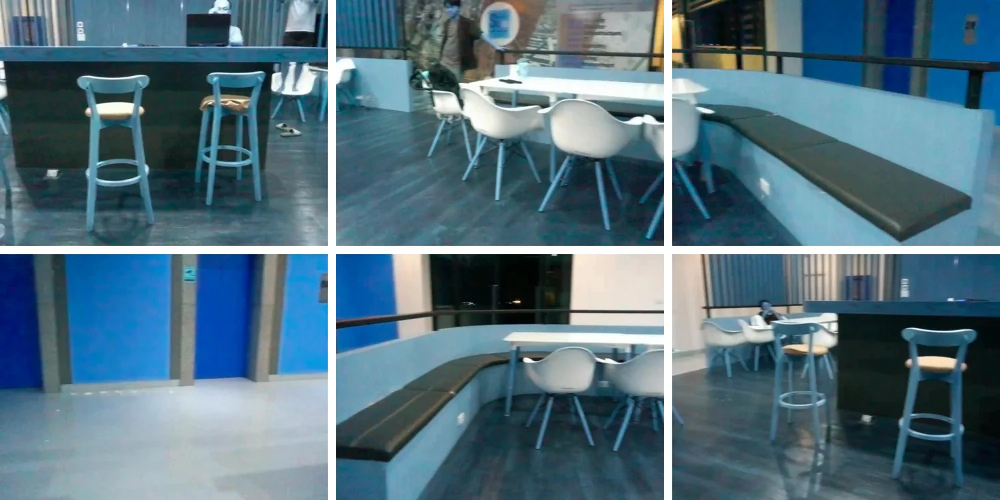

Eleven hand signs fly a drone — take off, move, flip, and tell it to photograph the room or film its own pirouette.

A DJI Tello takes its orders over Wi-Fi as short text commands — takeoff, forward 150, flip f. Anything that can produce those strings can fly it. This project makes the producer a hand.
What makes it more than a demo is that the recogniser was not written for it. It came from the robotic hand — the same fingersUpModule, the same landmark comparison, the same five bits — lifted out as a module and pointed at a different machine.
A mirror in one project, a lookup table in this one.
MediaPipe gives 21 landmarks, and comparing each fingertip against the joint two links down collapses them to one bit per finger. On the robotic hand those five bits went straight to five servos — the mapping was the identity, because the output was a hand.
A drone has no fingers. So the same five bits become an address instead: a pose is looked up in a table of eleven patterns, and whatever sits at that entry is flown. Five bits can name 32 distinct poses; eleven of them are spoken for, and the rest do nothing at all, which is exactly the safety margin you want when the output is a spinning object in the air.
The vocabulary reads sensibly in the hand, too. A closed fist launches, an open palm lands, and the fingers in between are directions.
Two of the commands are compound. Moving right is not one instruction but three — yaw 90°, fly forward 150 cm, yaw back 90° — and moving left is its mirror. The drone ends up translated sideways and pointing the way it started, having taken the scenic route to get there.
One watches you; the other watches the room.
Every pass of the loop pulls two frames. The laptop webcam supplies the frame the hand detector works on, drawn with its landmarks and the battery percentage read live from the drone. The Tello's own forward camera supplies the second, streamed over Wi-Fi and shown in its own window. Both get the status text painted on, so whichever one you are looking at tells you what the drone just understood.
That second feed is not decoration. Flying by gesture means standing still and facing your laptop, so the drone's view is the only way to see what it is actually pointed at — and it is the frame the capture commands save.
Gestures are held, not tapped. At webcam frame rate a raised palm is not one event but thirty a second, and thirty land commands would be at best redundant and at worst a fight. So every command carries a flag that is cleared the moment it fires, and a pose that is still there on the next frame does nothing.
As written those flags are never re-armed, so each command is good for one use per session — which is fine for a scripted demonstration and is the first thing to change for real flying. The natural fix is to re-arm a command once the hand has left its pose, which turns the flag into a proper edge detector.
Indoors, on one battery, with nothing in your hands.
The SDK calls block until the drone reports the move finished, so the preview window holds still for a second or two on every command while the aircraft goes and does it. It makes the loop feel like a conversation with pauses rather than a continuous controller — appropriate, given that each gesture is a whole manoeuvre rather than a stick deflection.
Two of the gestures make the drone produce a file.
Index and middle up — the same sign you would make asking someone to take your picture — saves the current frame from the drone's camera to disk. This is that file, exactly as it came off the aircraft, committed in the repository alongside the code that took it.

The index finger alone is the more interesting one. It spawns a recording thread that writes the drone's video stream to a file at 30 frames a second, then — on the main thread — commands a full 360° rotation. When the rotation returns, the flag drops and the thread is joined. The result is a self-shot panorama of the room, and the length of the clip is simply however long the drone took to turn around.

djitellopyfingersUpModule.py, the detector factored out of the robotic hand project